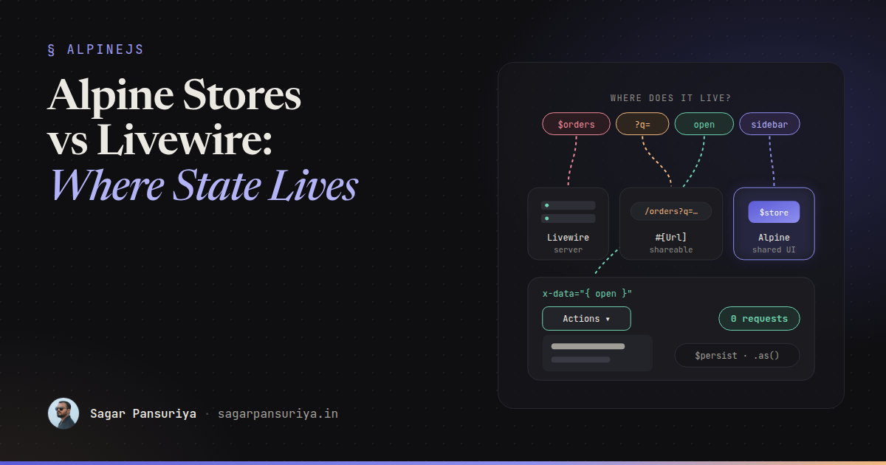
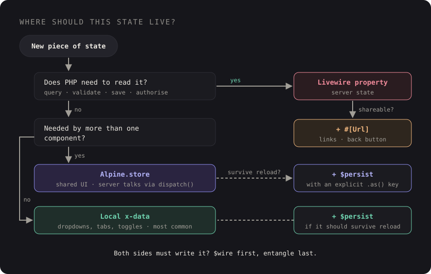

Alpine Stores vs Livewire State: Where Should UI State Live in a TALL App?


You've probably seen a Livewire component like this. It has $orders,
$filters and $page, which make sense. It also has
$showFilterPanel, $activeTab, $isDropdownOpen and
$hoveredRow. Every time someone opens a dropdown, the browser sends a request,
PHP hydrates the component, re-renders the Blade view, and sends back HTML so a menu can
appear. On a good connection it takes 150 ms. On a train it takes a second.
Nothing is broken. It's just that state ended up on the server because Livewire makes it so easy to put it there. In a TALL app you have several places state can live, and picking the right one is most of the difference between an app that feels instant and one that feels like it's thinking.
This post gives you a way to classify state, the tool that fits each kind, and the trade-offs of the tools that sit between Alpine and Livewire.
Four kinds of state
Before choosing a tool, ask what the state is. In almost every TALL app I've worked on, state falls into one of four buckets:
| Kind | Examples | Home |
|---|---|---|
| Server / domain | Orders, the cart, form values that get validated and saved | Livewire properties |
| URL | Search query, active filters, sort, page, selected tab you'd share | Livewire #[Url] |
| UI-ephemeral | Dropdown open, hover, accordion, "show password" | Local Alpine x-data |
| Cross-component UI | Sidebar collapsed, toast queue, theme, command palette open | Alpine.store (plus $persist) |
The question that sorts most state instantly: does the server need to know? If PHP never reads the value to query, validate or authorise something, it probably shouldn't cost a round trip to change.
Server state: Livewire properties
This is what Livewire is great at. Data that comes from the database, gets validated, or decides what the user is allowed to see belongs in public properties or computed properties:
class OrderIndex extends Component
{
public string $status = 'open';
#[Computed]
public function orders()
{
return auth()->user()->orders()
->where('status', $this->status)
->latest()
->paginate(20);
}
}Remember that public properties are sent to the browser and back on every request, so keep
them small. Store IDs, not whole models, and never trust a public property the user could
tamper with for authorisation. Livewire's #[Locked] attribute stops the client
from changing a property, which is worth using for things like a record ID.
URL state: #[Url]
If a user would reasonably expect to bookmark it, share it or hit back to undo it, it belongs in the URL. Filters and search are the classic case. Livewire makes this a one-line change:
use Livewire\Attributes\Url;
class OrderIndex extends Component
{
#[Url(as: 'q', except: '')]
public string $search = '';
#[Url(history: true)]
public string $status = 'open';
}as gives the query string a shorter name, except keeps default
values out of the URL, and history: true pushes a browser history entry so
the back button steps through filter changes instead of leaving the page. Use
history for deliberate choices like a status tab, not for a search box, or back
becomes unusable.
URL state is still server state: changing it runs a request. That's fine, because changing a filter should fetch new data.
UI-ephemeral state: plain x-data
Dropdowns, tooltips, accordions, tab panels whose content is already on the page, password visibility toggles. None of these need PHP. Keep them in Alpine, local to the element:
<div x-data="{ open: false }" @click.outside="open = false" class="relative">
<button @click="open = !open" :aria-expanded="open">Actions</button>
<div x-show="open" x-transition class="absolute right-0 mt-2">
<button wire:click="archive({{ $order->id }})">Archive</button>
<button wire:click="duplicate({{ $order->id }})">Duplicate</button>
</div>
</div>Opening the menu is instant. Only the actions that change data go to the server. This one habit removes a surprising number of round trips from a typical Livewire app.
A detail worth knowing: when Livewire re-renders, its morphing keeps Alpine state on
elements that survive the morph, so the dropdown won't snap shut every time the component
updates. Add wire:key to repeated items so elements are matched correctly and
the right menu keeps its state.
Cross-component UI state: Alpine.store
Some UI state is needed in more than one place. The sidebar toggle is in the header, but the sidebar is in the layout. A toast can be triggered from any component. Passing this through Livewire means a round trip and usually an event bus. An Alpine store is a global reactive object any component can read and write:
// resources/js/app.js
document.addEventListener('alpine:init', () => {
Alpine.store('ui', {
sidebarCollapsed: Alpine.$persist(false).as('ui.sidebarCollapsed'),
paletteOpen: false,
toggleSidebar() {
this.sidebarCollapsed = !this.sidebarCollapsed;
},
});
Alpine.store('toasts', {
items: [],
push(message, type = 'success') {
const id = Date.now() + Math.random();
this.items.push({ id, message, type });
setTimeout(() => this.dismiss(id), 4000);
},
dismiss(id) {
this.items = this.items.filter(t => t.id !== id);
},
});
});{{-- header --}}
<button @click="$store.ui.toggleSidebar()">☰</button>
{{-- layout --}}
<aside :class="$store.ui.sidebarCollapsed ? 'w-16' : 'w-64'">…</aside>
{{-- toasts, anywhere in the layout --}}
<div x-data @notify.window="$store.toasts.push($event.detail.message)">
<template x-for="t in $store.toasts.items" :key="t.id">
<div x-text="t.message" @click="$store.toasts.dismiss(t.id)"></div>
</template>
</div>The toast example also shows the clean way for the server to talk to UI state. A Livewire
action calls $this->dispatch('notify', message: 'Order archived'), the event
reaches the browser, and Alpine owns everything after that. The server doesn't track which
toasts are visible, because it has no reason to.
Stores also work well with wire:navigate. Because navigation swaps the page
without reloading JavaScript, the store stays in memory between pages, so the command
palette or a half-finished UI preference survives the navigation.
$persist: remember it across reloads
The sidebarCollapsed line above uses Alpine's Persist plugin, which saves a
value to localStorage and restores it on the next visit. If you use Livewire 3's
bundled Alpine, Persist is already included; with standalone Alpine, install
@alpinejs/persist and register it. It works in local components too:
<div x-data="{ view: $persist('grid').as('orders.view') }">
<button @click="view = 'grid'">Grid</button>
<button @click="view = 'list'">List</button>
</div>Always give persisted values an explicit .as() key. Without one, keys are
generated from the property name, and two components with a view property
will overwrite each other. Also remember localStorage is per device: if a
preference should follow the user to their phone, it's server state and belongs in the
database.
The bridge: $wire and entangle
Sometimes state genuinely needs to exist on both sides. A modal that opens from Alpine but
whose visibility the server also sets after saving. A rich text editor whose content must end
up in a Livewire property. This is where $wire and entangle come
in.
<div x-data="{ open: $wire.entangle('showEditModal') }">
<button @click="open = true">Edit</button>
<div x-show="open">…</div>
</div>entangle keeps an Alpine property and a Livewire property in sync. In Livewire 3
it's deferred by default: Alpine updates instantly, and the value travels to the server with
the next request. A live modifier exists that syncs on every change, which brings the round
trips right back.
The trade-offs are real:
- Two sources of truth. If the server and the client both change the value around the same request, it's not always obvious which one wins.
- Hidden cost. A live entangle on something that changes often, like a slider, quietly becomes a request per movement.
- Often unnecessary. The Livewire docs themselves suggest using
$wiredirectly in most cases.$wire.showEditModalis reactive in Alpine, and setting it updates the Livewire property locally until the next request.
<div x-data>
<button @click="$wire.showEditModal = true">Edit</button>
<div x-show="$wire.showEditModal">…</div>
</div>My default: if the server never needs to set the value, keep it in Alpine alone. If the server
needs to close the modal after a save, the simplest option is often a dispatched
browser event ($this->dispatch('close-modal')) rather than shared state at
all. Reach for $wire or entangle only when both sides truly read
and write the same value.
A decision flowchart
When you're adding a new piece of state, walk it through these questions in order:

- Does PHP need to read it to query, validate, save or authorise? Livewire property.
- Should it survive a shared link or the back button? Add
#[Url]. - Is it needed by more than one component?
Alpine.store. - Should it survive a reload on this device? Wrap it in
$persistwith an explicit key. - Otherwise: local
x-data. This should be the most common answer.
Takeaways
- Classify state before choosing a tool: server, URL, UI-ephemeral or cross-component UI.
- "Does the server need to know?" sorts most of it. If not, don't pay a round trip.
- Use
#[Url]for filters and search, withhistoryonly for deliberate navigation. - Keep dropdowns, tabs and toggles in local
x-data. - Use
Alpine.storefor shared UI state and let Livewire talk to it through dispatched events. - Always key
$persistwith.as(), and keep cross-device preferences in the database. - Treat
entangleas a last resort, and avoid live syncing on values that change often.
Go back to the component from the start. $status and $search stay,
with #[Url]. $showFilterPanel moves to a store,
$isDropdownOpen and $activeTab move to local x-data, and
$hoveredRow goes away entirely in favour of a CSS :hover. The
component gets smaller, every menu opens instantly, and the server only hears about things it
actually cares about.
Discussion